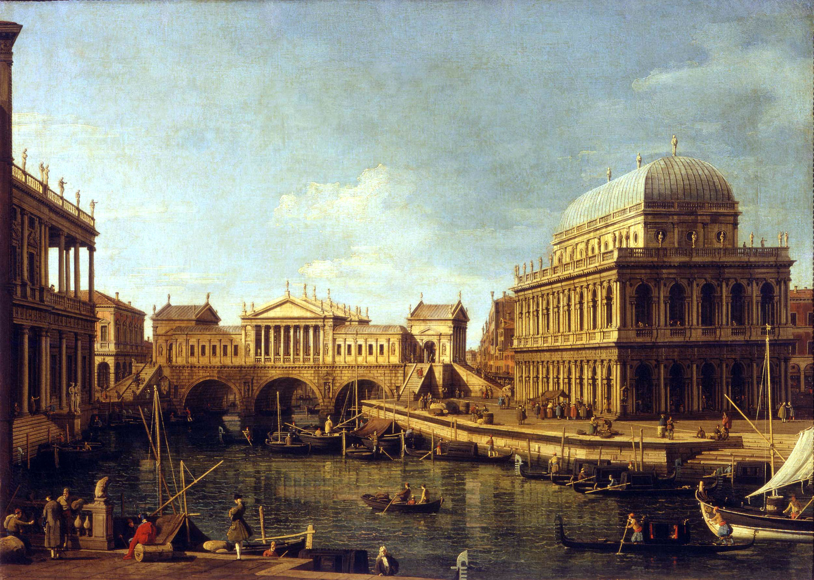
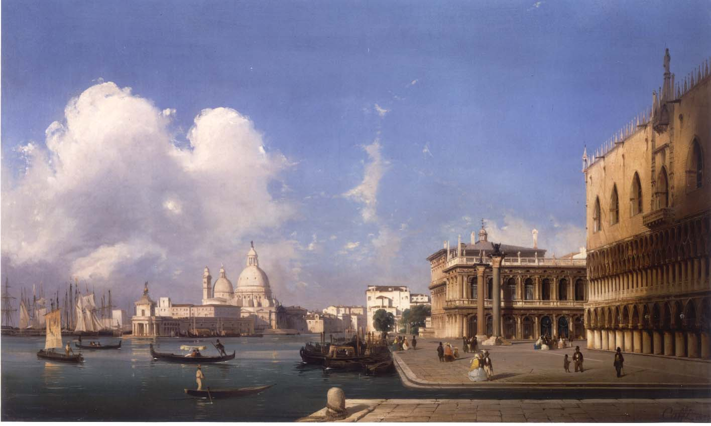

| I vedutisti | |
|
Nel 1700 nasce una nuova corrente artistica, il "Vedutismo". Diversi sono i suoi rappresentanti; tra i più celebri vanno ricordati
|
Sotto sono riportati alcuni dipinti che hanno meglio distinto questo periodo artistico.   |
| ©NEIADE 2017 -- All rights reserved | |